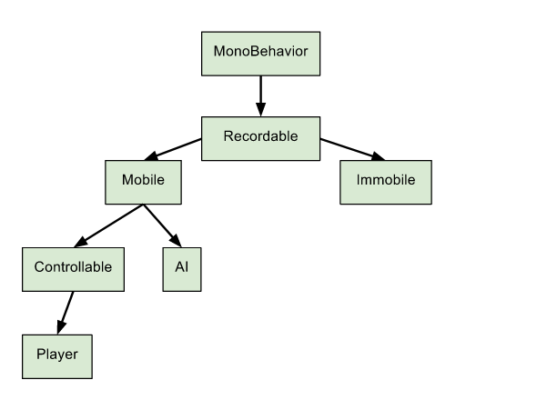

Class Inheritance
Unity does a fine job of making scripting easy for the player. You throw in a class, write its functionality, and send them off on their merry way in the game world. While this might work in the beginning, we'll end up with a lot of problems in the long run. It's worth taking the extra time to make a hierarchal model in the beginning, even if it takes a substantial amount of planning to do so.
Why it's important
Suppose that in our game, we have two different types of enemies: 'Blob1' and 'Blob2'. Both enemies are capable of similar things –– like moving or jumping. Now, it'd be a shame if we had to write those functionalities twice in code, right? Moreover, every time we want to edit the functionality, we would have to do it twice. And if we had three, four, or five enemy types, we'd have to change just as many codes.
So that's why we have class inheritance. We can write the functionality of moving and jumping in a class, and have all of the enemies inherit from that class. That way, when we change the functionality for moving or jumping, we only have to alter code in the parent class.

By establishing a hierarchy for our game first, we'll have a sort of outline to work with. If we didn't do this kind of designing from the get-go, we would likely run into trouble when we decide to change something.
How it works
We start off with a class. We'll call it mobile, since these will be the objects that can move.
public class Mobile
{
public Mobile()
{
}
public void Move()
{
// Do movement
}
}
Now we'll add our enemy class. Notice that it's inheriting from Mobile, so it will be able to call any non-private functions inside Mobile.
public class Blob1 : Mobile
{
public Blob1()
{
Move(); // We can call Move() as if it existed in this class!
}
}